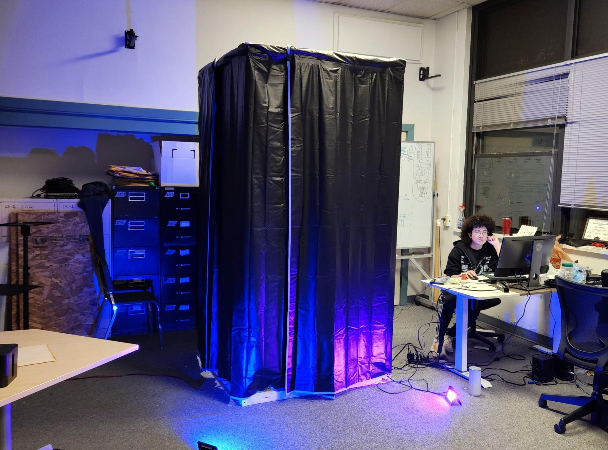
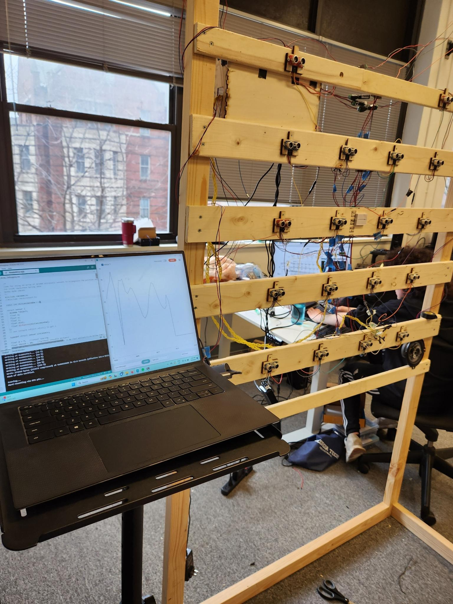
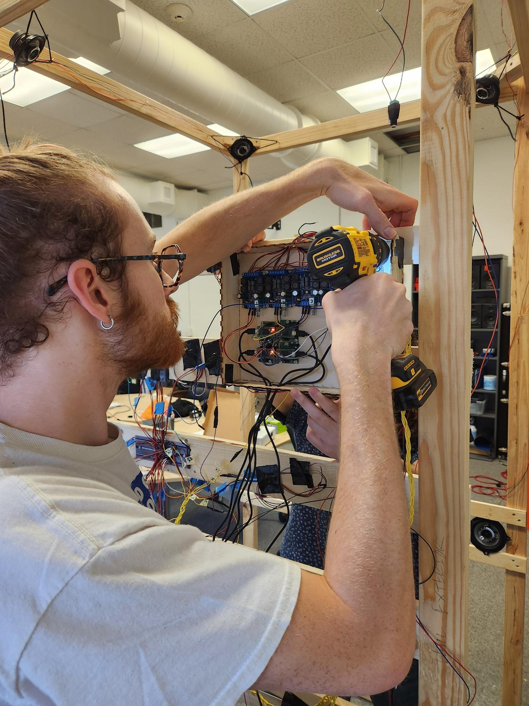
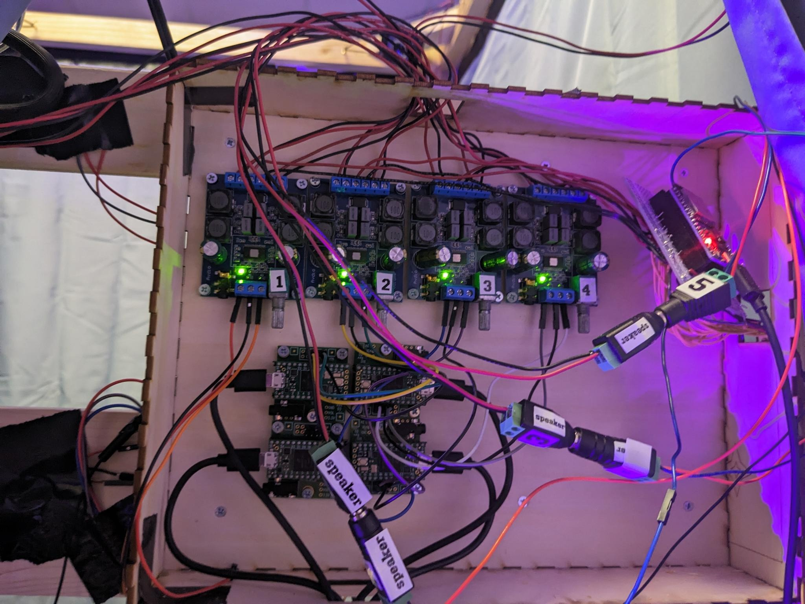
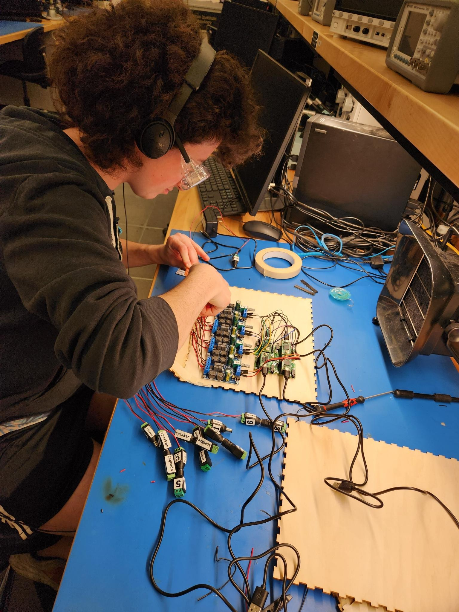
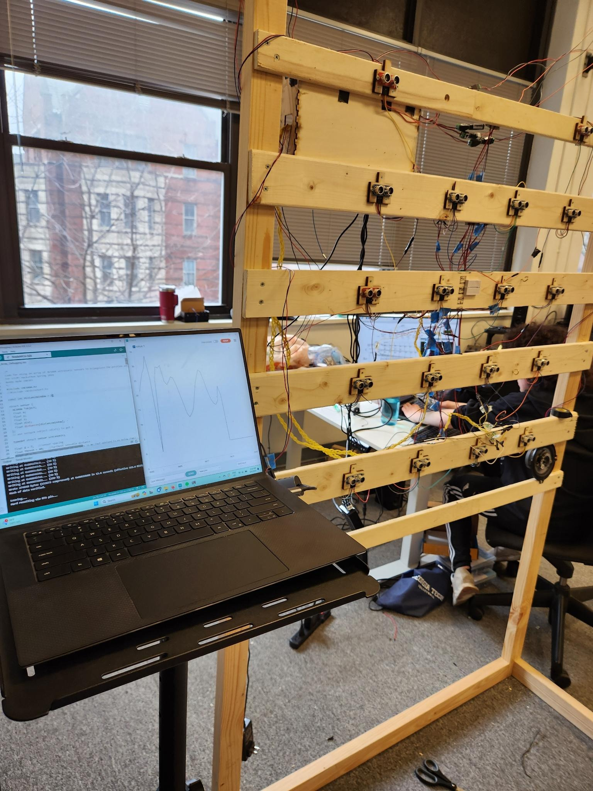
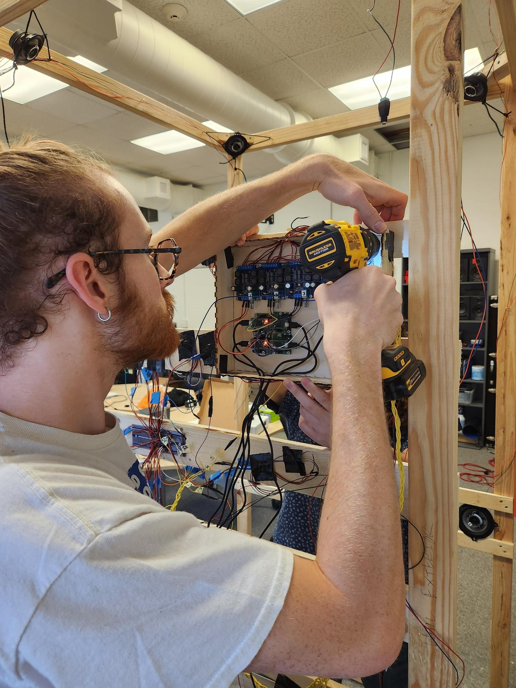
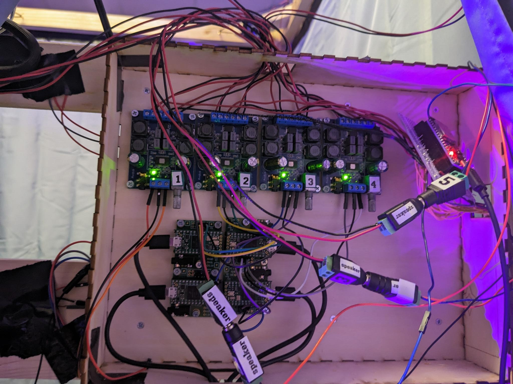
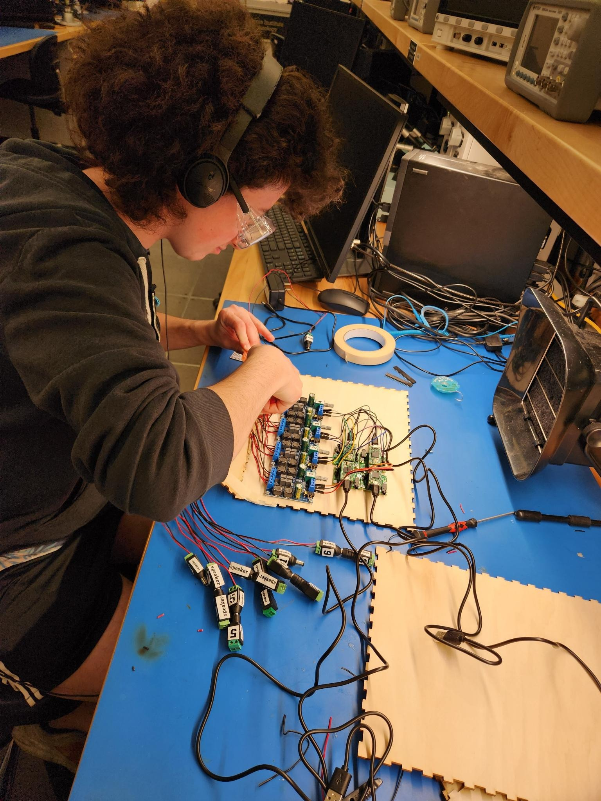

Made for the Music Technology/Synthux Hackathon during the week of March 1-6, 2024.
By Ray Fairbank, Renny Hyde, Mir Jeffres, and Josh Rubin
From the outside, the Auditory Mirror is an 8-foot tall by 4-foot wide box, draped in black fabric. It emanates an ominous ambience, beckoning the audience to step inside. Once inside, the user is enveloped in a rich soundscape and complete darkness. Although they can’t see anything, the Auditory Mirror can see them. As the user moves their hands and body, the sounds change and warp, responding to actions that the user cannot see themselves. The Auditory Mirror examines how we use our senses to interact with the world, and how that interaction informs our own perception of self.
The skeleton of the Auditory Mirror is a wooden frame with one detachable wall to ensure it can be moved. There are 8 speakers mounted in each of the vertices surrounding the user’s head for a fully immersive auditory experience. The detachable wall houses an array of 18 ultrasonic sensors – the “mirror”. The sensor data is received by an ESP-32 microcontroller which triangulates the position and velocity of the user’s hand. This data is sent via UART to a Raspberry Pi running Pure Data. Pure Data is responsible for the sound generation, which responds to motion from the user, changing over time. Using JACK, PD outputs 8 individual audio streams to four Teensy microcontrollers with the Teensy Audio Shield, which act as USB audio interfaces to drive the speakers.
Our Git repo: https://github.com/combover01/auditory-mirror
The “About” Youtube video: https://youtu.be/aqoVRmsQISA
The “Featured” Youtube video: https://youtu.be/c2pnoDKYjrE

 






